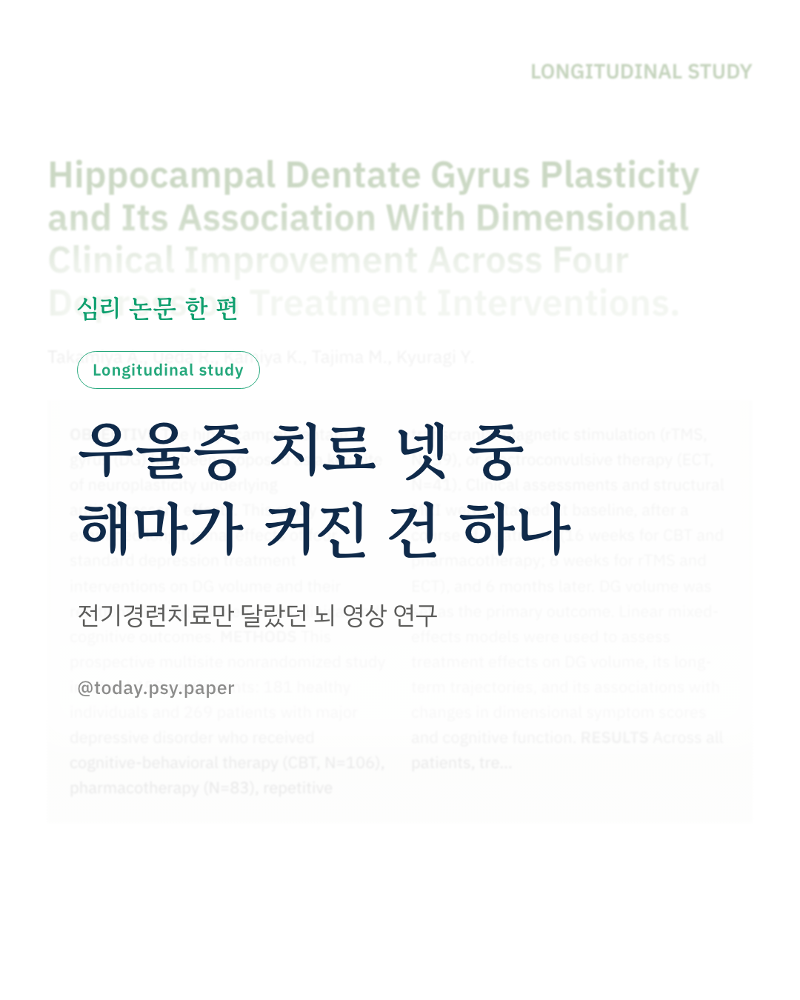
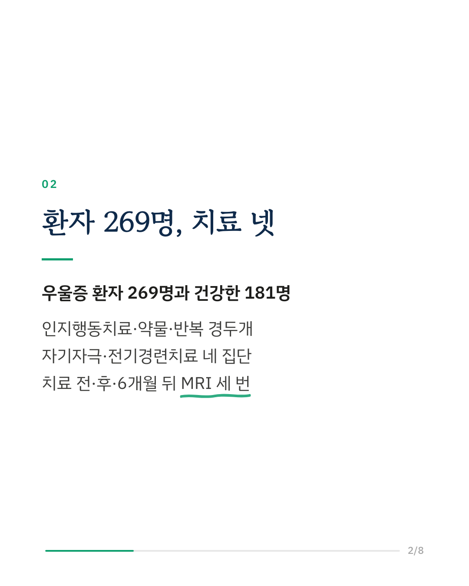
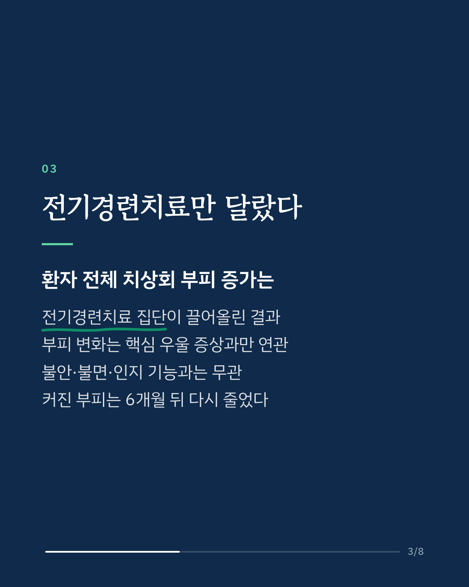
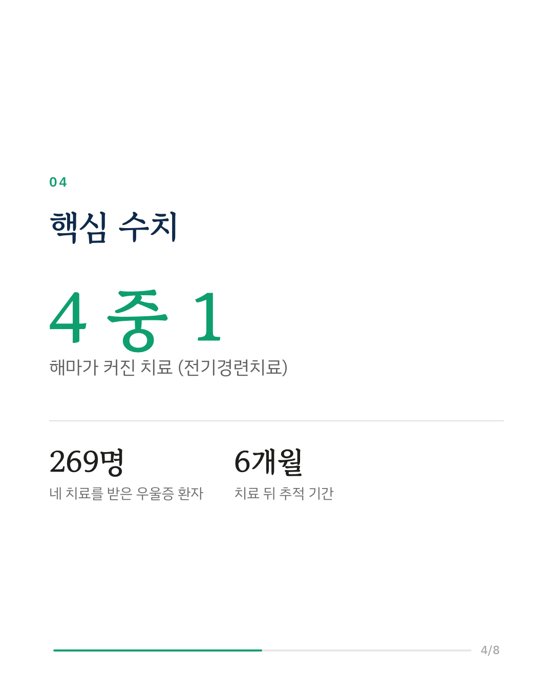
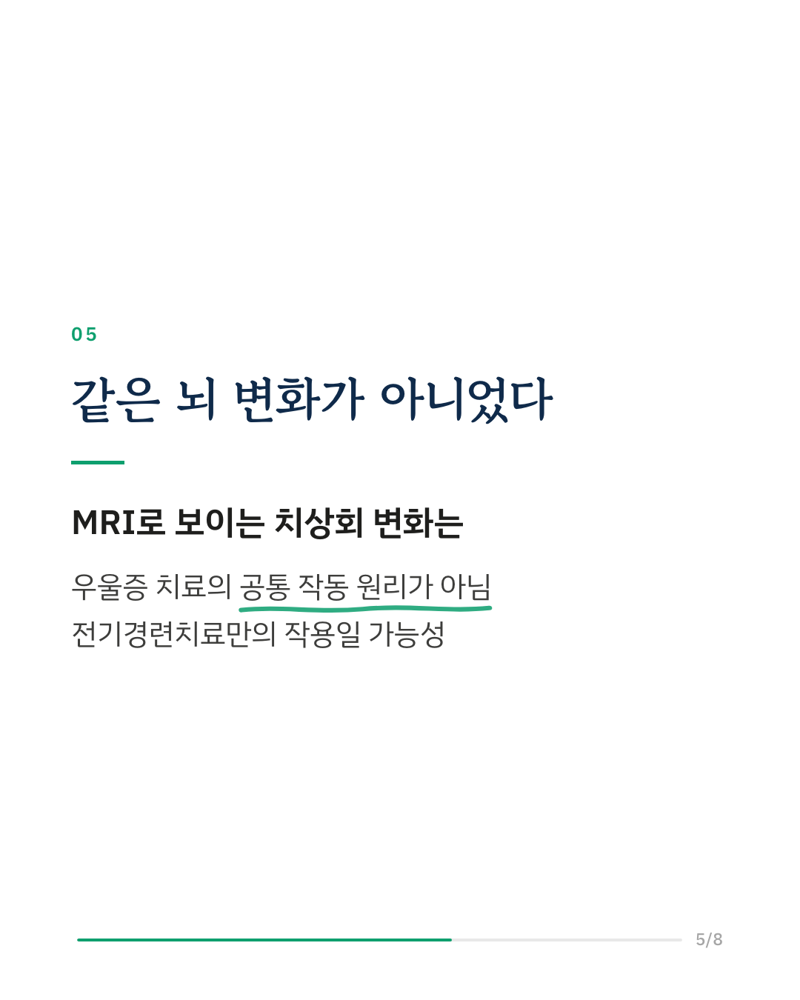
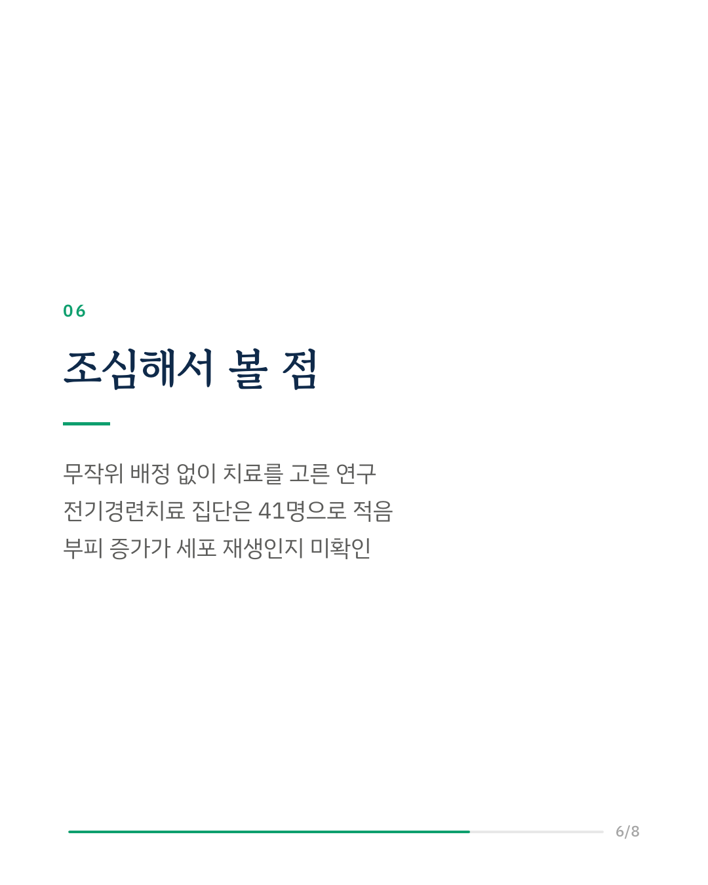
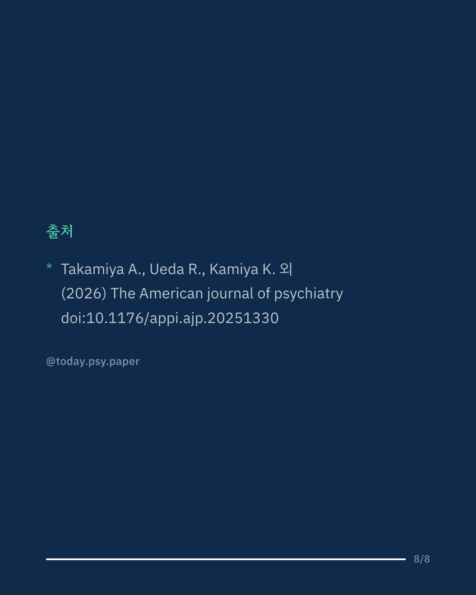

우울증 치료가 효과를 내는 자리로 해마의 치상회가 자주 거론됩니다. 새 신경세포가 자라는 이 부위가 어떤 치료에서든 똑같이 변하는지 확인하려고, 연구진은 우울증 환자 269명과 건강한 181명을 모았습니다. 환자는 인지행동치료, 약물치료, 반복 경두개 자기자극(rTMS), 전기경련치료(ECT) 중 하나를 받았고, 치료 전과 직후, 6개월 뒤에 MRI로 치상회 부피를 측정했습니다. 환자 전체로 보면 치료 뒤 치상회 부피가 늘었지만, 이 변화는 거의 전기경련치료 집단에서 나왔습니다. 부피 변화는 핵심 우울 증상이 좋아진 정도와만 관련이 있었고, 불안·신체 증상·불면이나 기억력 같은 인지 기능과는 관련이 없었습니다. 커진 부피는 6개월 뒤 다시 줄어드는 곡선을 그렸고, 핵심 우울 증상도 비슷한 흐름을 보였습니다. 연구진은 MRI로 보이는 치상회의 변화가 우울증 치료의 공통 원리가 아니라 전기경련치료 고유의 작용일 수 있다고 봅니다. 다만 참가자가 치료를 무작위로 배정받지 않아, 집단 간 차이가 애초의 환자 특성 때문일 가능성을 완전히 배제하기 어렵습니다. The American Journal of Psychiatry (2026), 'Hippocampal Dentate Gyrus Plasticity and Its Association With Dimensional Clinical Improvement Across Four Depression Treatment Interventions' DOI: 10.1176/appi.ajp.20251330 #임상심리 #정신건강정보 #심리학연구 #논문리뷰 #우울증 #전기경련치료 #뇌과학 #해마
python3 publish.py 42642807